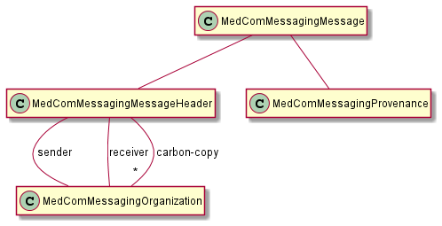
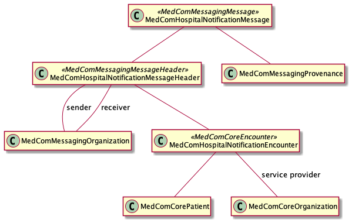
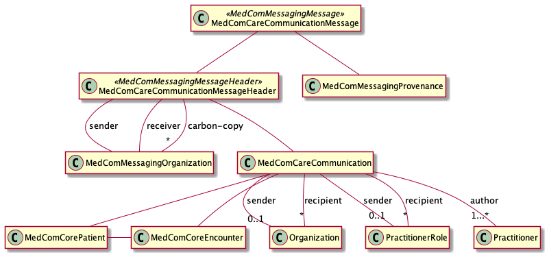

DK MedCom Core
1.0 - Build CI
DK MedCom Core - Local Development build (v1.0). See the Directory of published versions
This implementation guide is provided by MedCom to describe the use of FHIR®© in message based exchange of data in Danish healthcare.
The implementation guide contains profiles in three areas
The profiles are in general made open for additional content to allow further profiling for specific purposes defined by the communicating parties. Note: We intend to split the implementation guide into three separate packages in a future version.
The general messaging model containS the basic messaging template, which all messages (including acknowledgement messages) will comply with. The following diagram depicts the structure of a message.

These profiles are prefixed “MedComMessaging”. The general messaging model also include some core resources that are useful in profiling the actual messages. These are prefixed “MedComCore”. The following sections describe the overall purpose of each profiled resource.
The top level message bundle, which constrains the bundle resource to be a message type with a message header and a list of provenance resources to describe the message history.
The top level message header, which constrains the message header resource to have at least one sender and split the destination list into one primary destination organization and optionally a list of carbon-copy destination organizations. The message header uses a valueset of all message type allowed.
Organization resource used for sender and destination information in the messages. The resource contrains the organization resource to contain a SOR identifier as well as an EAN number for addressing purposes.
The provenance resource describes the activity an who has triggered the message. The provenance list describes the history of message activities if the message is releated to a previously exchanged message. Provenance information about previous activities refer to the previous message through its message header id.
The core patient constrains the dk core patient resource, making the name and managing organization mandatory.
The core organization resource contrains the organization resource to contain a SOR identifier.
The core encounter resource constrains the encounter resource to enforce a MedCom core patient as subject and the optional service provider to be a core organization (with a SOR identifier). The core encounter also add the optional possibility to specify an lpr3 identifier.
The core lpr3 encounter makes the lpr3 identifier mandatory.
The hospital notification messages is a message sent to relevant healthcare organizations when a patient is hospitalized. The hospital notifiction profile is not as open as other profiles because the message is automatically sent and thus not based on a patient consent. The legislation permits this exchange, but the message shall not contain further information.
The following diagram depicts the structure of the hospital notification mesage.

The hospital notification message follows the general message structure described above, except that the carbon-copy destination is not allowed. The following sections describe the overall purpose of each profiled resource.
The hospital notification message constrains the messaging message further to use the hospital notification messsage header and to require excactly one patient resource in the message. Furthermore, it constrains the provenance activity to contain only activities from the MedComHospitalNotificationMessageActivities value set, which contains activities such as admit, start-leave, end-leave, discharge, and other events triggering the message.
All referenced resources within the message are contained in the entry list.
The hospital notification message header constrains the messaging message header further to specify the fixed coding for this message and require a focus reference to a hospital notification encounter. Carbon-copy destination is not allowed.
The hospital notification message encounter contains the main content of the message and constrain the core encounter further to require a uniqe identifier for the encounter and restrict the status and class to a value set of relevant values. The start time of the encounter and a reference to the service provider is made mandatory. Most other values are disallowed due to the legislation.
English:
Danish:
The care communication message is a message sent between danish healthcare organizations, similar to an email with or without attachments.
The following diagram depicts the structure of the care communication message.

The care communication message follows the general message structure described above. The following sections describe the overall purpose of each profiled resource.
The care communication message constrains the messaging message further to use the care communication messsage header and to require excactly one patient resource in the message. Furthermore, it constrains the provenance activity to contain only activities from the MedComCareCommunicationMessageActivities value set, which contains activities such as new-message, forward-message, and other events triggering the message.
The care communication message header constrains the messaging message header further to specify the fixed coding for this message and require a focus reference to a care communication.
The care communication contains the main content of the message. It constrains the communication to the categories given in the MedComCareCommunicationCategories values and the priority to be either routine or ASAP. An optional title of the message is given in the topic of the communication. Care communication must contain an lpr3 encounter if an lpr3 identifier is known. The payload of the message is either text fragments or attachments, each given with a timestamp and an author. It is allowed to add a sender and/or recipient that is more precise than the sender and destination organizations given in the message header.
A Message Acknowledgment is required in MedCom FHIR Messaging and follows the recommandations from HL7 FHIR ValueSet response-code.
Message Acknowledgment is handled through the response element in the MedComAcknowledgmentMessageHeader.
English:
Danish:
All referenced resources within the message are contained in the entry list.
This document presents MedCom messaging concepts defined via FHIR processable artefacts:
FHIR profiles are managed under MedCom: